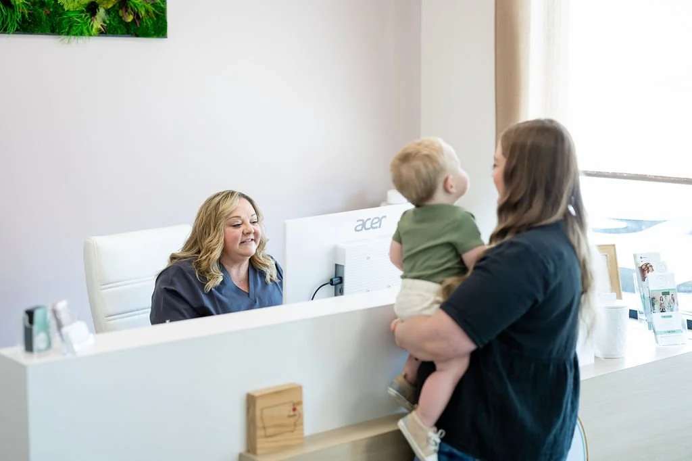
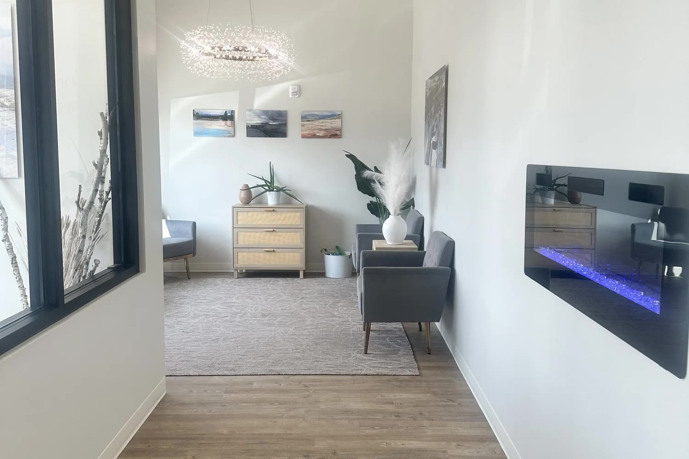

Use your insurance
Most major plans accepted
- Wellness exams, sick visits and chronic care billed to your plan
- Normal copays and deductibles apply
- Call with your plan name and we'll confirm we're in network
We're accepting new patients of every age, from newborns to seniors. Here's everything you need to know before your first visit, with no surprises and no runaround.

Call (563) 588-6659 during office hours. A real person at our Peosta front desk will answer, find a time that works, and help you choose a provider.
Use your health insurance as usual, or join our Direct Primary Care membership for a flat monthly fee. Not sure which fits? Ask us. We'll walk you through both honestly.
Your first visit is unhurried. We review your history, medications and goals so every visit after this one starts from a place of knowing you.
Bringing these items helps us make the most of your time together:
Please plan to arrive a few minutes early for your first visit so we can get you checked in.

Either way, you see the same providers, in the same clinic, with the same unhurried care.
Most major plans accepted
From $99/mo · kids $49/mo
Colds, flu, sore throats, ear infections, rashes, minor injuries, medication questions, physicals and ongoing conditions. We keep same-day slots open.
Non-emergency problems that can't wait when our clinic is closed, such as evenings, weekends and holidays.
Chest pain, trouble breathing, signs of stroke, severe bleeding, serious injuries, or any situation that feels life-threatening.
Yes. We welcome new patients of every age, from newborns to seniors. Call (563) 588-6659 to schedule.
We accept most major insurance plans. Because networks change, the quickest way to know for sure is to call us with your plan name. If you don't have insurance, or have a high deductible, ask about Direct Primary Care.
Absolutely. Our providers care for infants, kids, teens, adults and seniors, so your whole household can be seen under one roof by people who know your family.
In many cases, yes. HSA and FSA funds can often be used toward DPC membership fees. Check with your plan administrator to confirm eligibility for your specific account.
Let us know the name of your previous clinic when you schedule. We'll have you sign a records release so your history is here when you arrive.
Yes. We screen for anxiety and depression as part of primary care, and Jenna Hefel, DNP, PMHNP-BC provides psychiatric evaluations and medication management for patients ages 12 and up. Learn more.
8411 Peosta Commercial Ct, Suite 8, Peosta, IA 52068, about 10 minutes from most of western Dubuque County, with easy parking. Hours & directions.
“My 1st Burds Family Practice experience was great! Jennifer took great care of me! She was attentive & also gave me tips & advice to help with my supplements. I am a new patient & I’m happy they were recommended to me. The office was clean & they offer many other services. I’d recommend them if you’re looking to establish care & want doctors who take the time to create a custom & knowledgeable experience. Thank you!”
Mon–Wed 8–5 · Thu 8–6 · Fri 8–12. A real person answers.